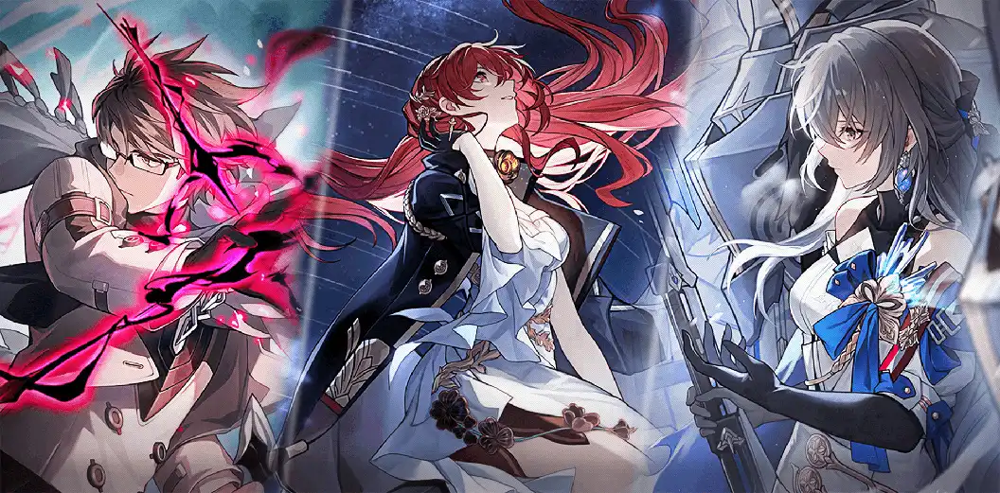

Introduction au jeu
Honkai : Star Rail est un RPG au tour par tour très similaire aux JRPG de la vieille école (en particulier la série Final Fantasy). Le jeu est divisé en deux modes : overworld et battle. Dans le monde extérieur, vous parcourez la carte et lorsque vous rencontrez un groupe ennemi, vous serez « transféré » en mode combat où vous devrez vaincre les ennemis dans un combat au tour par tour.
Nous parlerons du monde extérieur (également appelé exploration) et des modes de combat dans une section distincte plus loin dans le guide.
Personnages
Les personnages sont les unités jouables dans Honkai : Star Rail. Ils s'obtiennent principalement via Warps, le système gacha du jeu. Cependant, certains personnages peuvent être obtenus gratuitement via des missions ou des événements en jeu.
Statistiques du personnage
Éléments de caractères et chemins
Chaque personnage de Honkai: Star Rail a un élément qui leur est associé. L'élément d'un personnage détermine le type de dommage de leurs attaques.
Il y a actuellement 7 éléments dans le jeu:
Chaque personnage de Honkai: Star Rail a aussi un chemin. Vous pouvez voir les chemins comme des classes de personnages. Un chemin de caractère vous donnera une idée générale du rôle que Character remplit dans le combat ainsi que de ce qu'ils peuvent utiliser pleinement.
Il y a actuellement 7e voie dans le jeu:
Compétences en caractères
Chaque personnage de Honkai: Star Rail a 5 capacités différentes qui définissent leur style de jeu.
Attaque de base
La capacité d'attaque de base est l'auto-attaque d'un personnage et est toujours disponible au combat. C'est généralement la plus faible des capacités de combat actives d'un Character, mais c'est votre principale source de génération de Skill Points, une ressource qui est nécessaire pour activer la capacité de compétence d'un personnage.
Compétence
La compétence est une capacité de combat qu'un personnage peut utiliser avec des effets allant de l'utilisation de dommages à la fourniture de buffs pour vos alliés. La capacité de compétence n'a pas de temps de recharge et vous nécessite plutôt de dépenser Skill Point(s) pour l'utiliser.
Ultimate
La capacité ultime d'un personnage est généralement leur plus grande capacité de combat. Pour utiliser la capacité Ultime, il doit d'abord être chargé par certaines actions de combat telles que l'attaque ou la défaite d'un ennemi. Il doit également être rechargé après chaque utilisation.
Talent
Le talent est la capacité passive du personnage. Généralement, il prend la forme d'un effet conditionnel lorsque le Talent apportera une sorte d'avantage au personnage et/ou à leurs alliés lorsque certaines conditions seront remplies.
Technique
Contrairement aux autres capacités d'un personnage, la technique est une capacité au-dessus du monde plutôt qu'une capacité de combat et est utilisée avant le début du combat. Selon le caractère, son utilisation va soit déclencher un combat avec une attaque spéciale, soit fournir un buff avant d'engager l'ennemi.